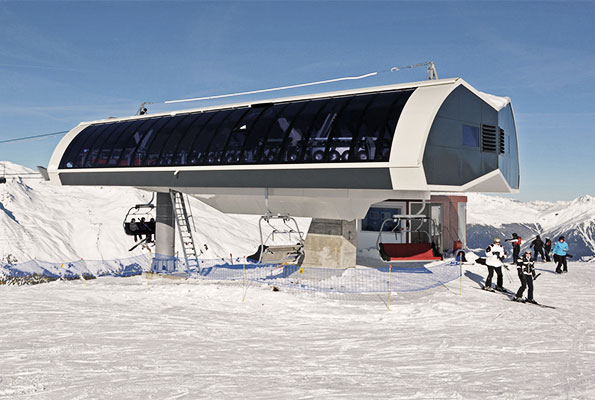
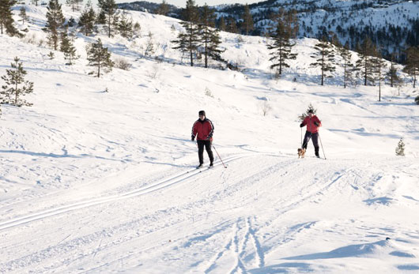
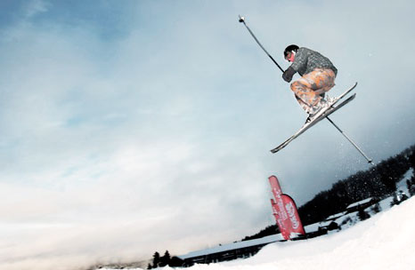
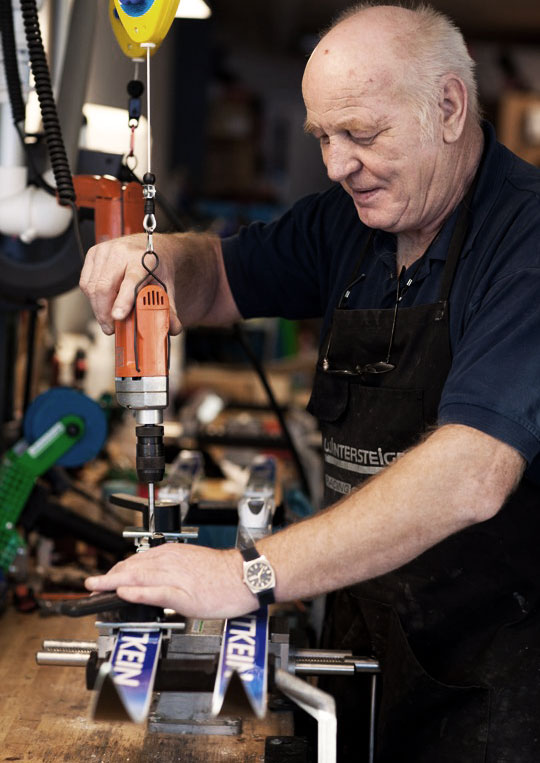

Dette er vakkert og sentralt plasserte helårshytter. 600 000 mennesker har under to timers kjøring til Gautefalltunet og Rytterspranget Vest – Sørøstlandets store hytteeldorado.




Gautefall - et ekte vintersportssted
Vi må starte med å fremheve den fantastiske skiheisen som er splitter ny til sesongen 2014/-15. Den ”gamle” heisen, ”toseteren”, brukte ti minutter til toppen. Den nye bruker tre! Og nå kan inntil seks personer sitte sammen. Fantastisk for deg som liker deg bedre i bakken enn i heiskø.
- Alpint
- Langrenn
- Snowboard
- Telemark
- Skiverksted
- Serveringssteder
- Forretninger
Gautefall har også suverent flotte turløyper, milevis med preparerte spor, og ikke minst den populære lysløøypa på Biathlonstadion. Den er for øvrig åpen året rundt, og er ideell for løpere og rulleskibrukere i barmarksesongen.
Er du glad i aktivitet og frisk luft vil du elske Gautefall